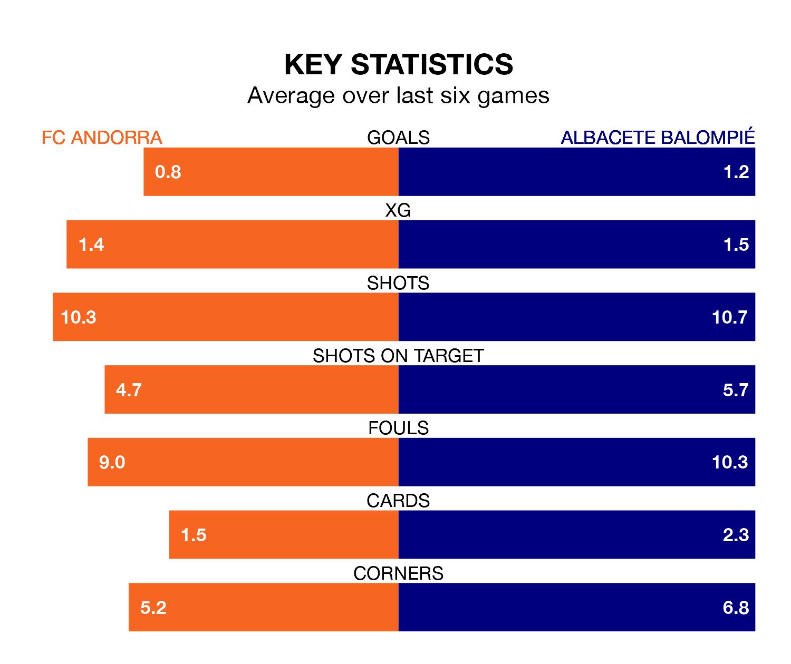

Albacete Balompié visit FC Andorra at Estadi Nacional on Sunday on the back of three consecutive wins in the Segunda División.
Albacete have picked up 11 points from their last six games, and they face an Andorra side who have lost their last two matches, and collected eight points from the last possible 18.
Andorra are bottom of the table after 37 games, of which they have won nine and drawn 10, earning 37 points.
Albacete are four places ahead of the hosts in 18th, with 10 wins and 12 draws putting them on 42 points.
With 29 goals in 37 games so far this season, Andorra are the league's second-lowest scorers with 0.8 goals per game. And they are conceding more than average, letting in 44 goals at a rate of 1.2 per game.
The away side, meanwhile, are above average scorers, with 1.2 goals per game, compared to a league average of 1.1. They have conceded 1.4 goals per game.
Albacete's Manuel Fuster Lázaro is among the league's most creative players, racking up eight assists in 37 appearances so far this season, and holding second spot in the Segunda División's assist charts.
For Andorra, Álex Pecharroman Eizaguirre, Manuel Nieto Sánchez and José Marsà have set up the most goals, having laid on three assists apiece to date.
In the last five years, Andorra and Albacete have played each other on five occasions. Andorra won one of them, Albacete three, and they drew once.
On average, Andorra scored 1.0 goal and Albacete 1.4 in those matches.
Their last meeting was on September 30, when Albacete won 3-1 at home.
Andorra's last match was on April 26, a 1-1 draw against Racing Santander, with Julen Lobete getting the goal for Andorra.
Albacete beat SD Eibar 2-1 last time out, on Sunday, with Alberto Quiles Piosa and Lander Olaetxea Ibaibarriaga on the scoresheet.
Updated: 10:44 (UTC), 30/04/24